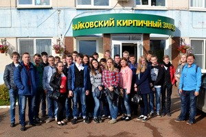
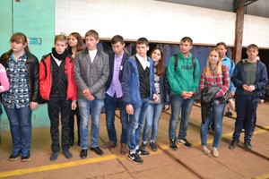
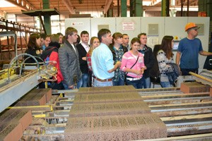
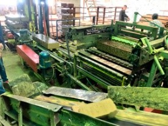

Экскурсия на Чайковский кирпичный завод 2017
9 сентября группа студентов 2-08.02 (строители) в рамках теоретического курса ПМ.05 «Выполнение работ по одной или нескольким профессиям рабочих, должностям служащих» посетила «Чайковский кирпичный завод». Во время экскурсии студенты познакомились с технологическим процессом производства кирпича , начиная от исходного материала (глины) и заканчивая готовой продукцией в упаковке. Весь процесс изготовления кирпича происходит на импортном оборудовании. Студенты живо интересовались этапами производства, работой конвейера, автоматизированной системой управления- задавали много вопросов. ГБПОУ «Чайковский техникум промышленных технологий и управления» благодарит руководство Чайковского кирпичного завода за интересную экскурсию, предоставленный транспорт и надеется на дальнейшее сотрудничество.



